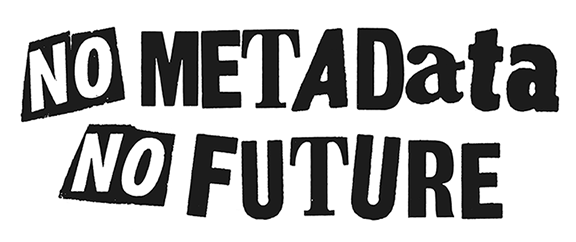

Archives & Special Collections
Gregory Wiedeman
University Archivist
What is an archive?
- Manuscript tradition
- Public records tradition
- Archival appraisal
- Overview of the Department
- Arrangement & Description
- Systems
- Born-digital archives
- Stacks tour
M.E. Grenander Department of Special Collections & Archives
- Collects unique records of enduring value
- Provide access and encourage use
- Control the boundaries of possible research
“The archival sliver”
“…the archival record is at once expression
and instrument of power.”
Verne Harris, “The Archival Sliver: Power, Memory, and Archives in South Africa,” Archival Science 2 (2002): 63-68.
Archival appraisal
- not monetary value
- Selecting what gets saved
Michelle Caswell, “Dusting for Fingerprints: Introducing Feminist Standpoint Appraisal,” Journal of Critical Library and Information Studies Vol. 3 No. 2 (2021)
Coordination with other archives
- Colleges & Universities
- Government archives
- Business and nonprofit archives
Collecting Areas
- Modern Political Archives
- National Death Penalty Archives
- University Archives
- Business, Literary, and Miscellaneous Manuscripts
- Rare Books
- Mathes Childrens Literature Collection
- German and Jewish Intellectual Émigré
Modern Political Archives
- State and Federal Representatives
- Rockefeller-era aids
- New York Coalition for Alternatives to Pesticides Records
- Women’s Building Collection
- NOW NYS and Albany chapters
- NYCLU Records
National Death Penalty Archives
- Watt Espy Papers
- David Baldus Papers
- Catholics Against Capital Punishment Records
- Correctional Association of New York Records
- People on death row, family members
Business, Literary, and Miscellaneous Manuscripts
- William Kennedy Papers
- Marcia Brown Papers
- Gregory Maguire Papers
- University Records
- Office of the President
- University Senate & Council
- Provost, Academic Administration
- Centers & Institutes
- Reference Collections
- Web Archives
- Student Groups and Manuscripts
- Student Association
- Albany Student Press
- Faculty and Alumni Papers
About us
4 archivists
- Jodi Boyle, Interim Department Head
- Melissa McMullen, Research Services Archivist
- Mark Wolfe, Curator of Digital Collections
- Gregory Wiedeman, University Archivist
- David Mitchell, Mathes Curator
- 7-10 Student Assistants
How Users Access Materials
- Reference generally divided up by collecting area
- Walk-ins, desk always staffed
- Email
- Coordination with faculty
- Web requests
- Ticket system to track statistics
Arrangement & Description

How do we manage large volumes
Extensible Processing
Mark A. Greene and Dennis Meissner, “More Product, Less Process: Revamping Traditional Archival Processing,” American Archivist Vol. 68, No. 2 (2005)
- No Detailed Processing vs. Minimal Processing/MPLP
- Creative approaches to scale are fundamental to archives
- We will never have enough resources
- Processing is resource management
Handling Scale with our Principles
- Establishing baseline processing for everything
- User-based reason for adding additional description
- Request statistics
- Web usage statistics
- Avoid granular preservation interventions in most cases
- Don’t describe containers
- Make the robots do the work
Digitization on Demand
Systems
- Network of applications
- Community-developed open source systems
- UAlbany Archives Github
- Connections using professional standards over APIs
- Encoded Archival Description (EAD)
Systems
Web Archives
Email Archives
- Floppies, zip disks, CDs, DVDs
- Forensic disk imaging
- BitCurator environment
Stacks tour